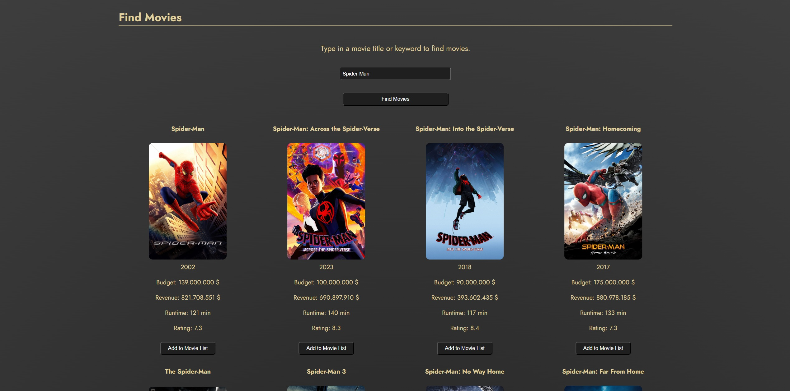
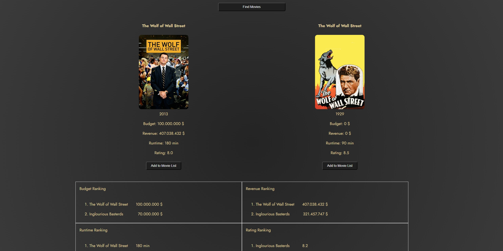
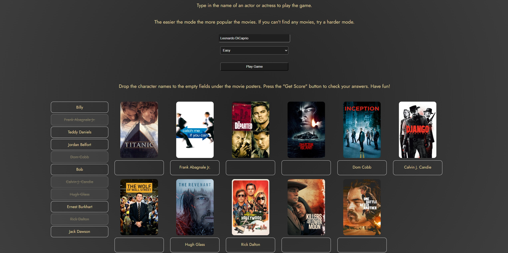
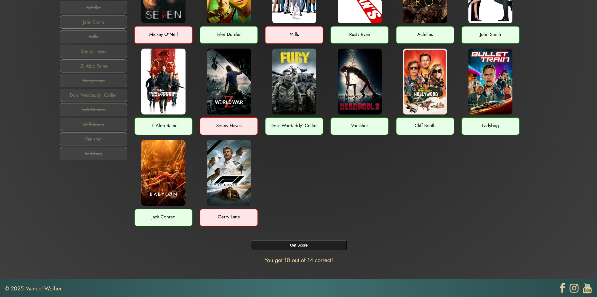
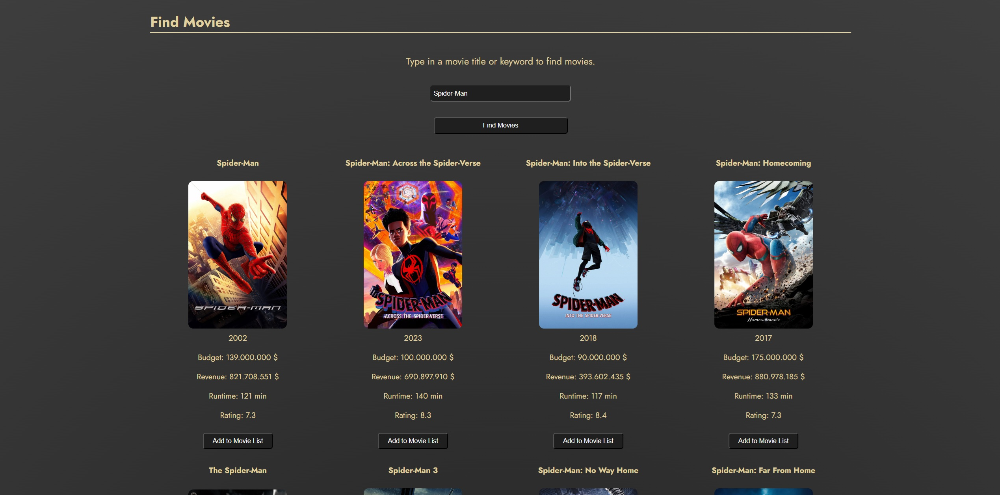
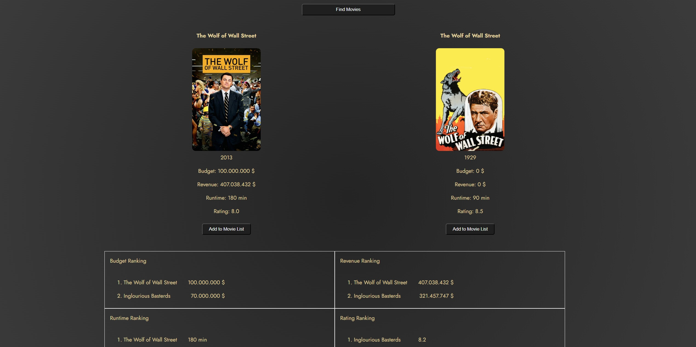
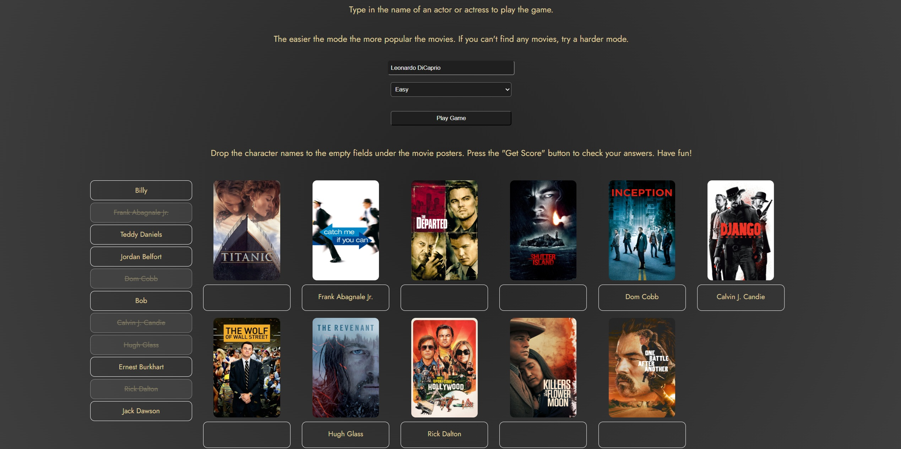
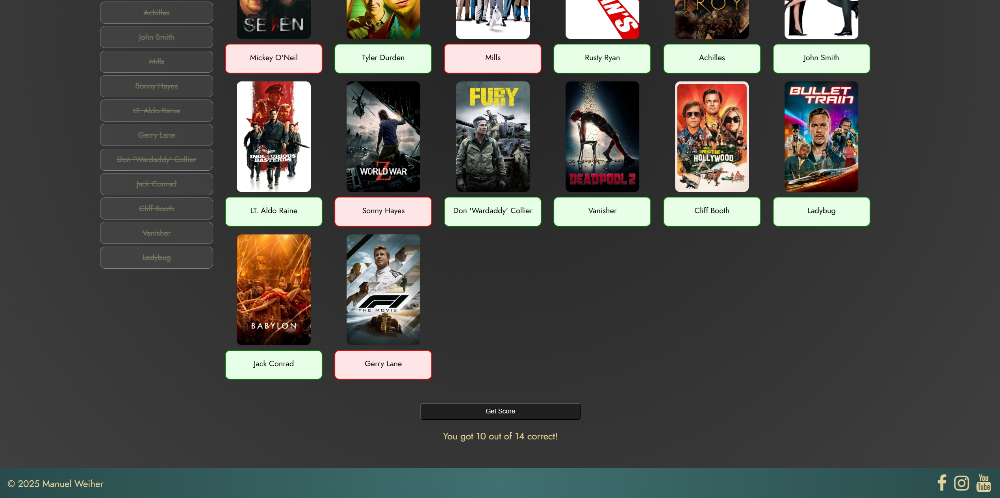

Movie Facts Website
Description
A website where a user can find movie data and trivia and use it in a playful way.
The 5 different categories:
Find Mutual Movies:
Lets a user search for two persons, that could be actor/actresses, directors, composers or cinematographers. If existing it shows the movies where those two people worked together.
Find Data Lists:
A user can search for an actors/actress', directors, composers or cinamtographers filmohraphy. The result is a table with all the movies and data like budget, runtime and rating.
It also shows calculated data like average revenue, total runtime and average rating, which can be added to lists, that are automatically ranked.
Find People Trivia:
Search for an actor/actress, director, composer or cinematographer to get a diagram representing all the genres their movies have and all the film studios that produced their movies.
The diagram is clickable, showing all the movies corresponding to the clicked genre or film studio.
Find Movies:
A user can search for a movie and get the movie results with data like budget, revenue and rating. Eaach movie could be added to a ranking list at the bottom of the page.
Character Guessing Game:
A user can play the game with an actor or actress of their choice. After the search the characters are listed on the left side and the movies on the right side.
The characters could be placed under the movies via drag and drop. After the submitting the choices with the "Get Score" button the user gets a score revealing with red and green
colour which characters where guessed right.
Languages used:
React/Redux, Javascript, CSS, HTML
API used:
TMDB
Images
 






